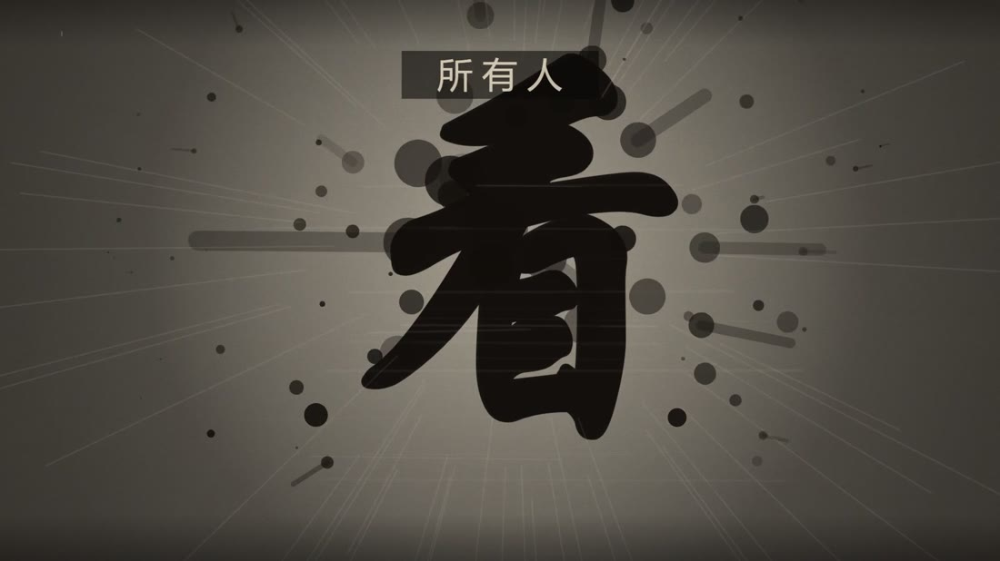
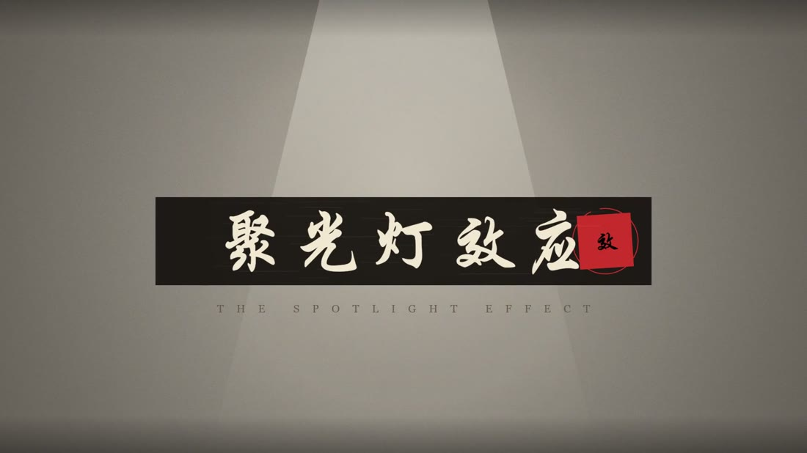
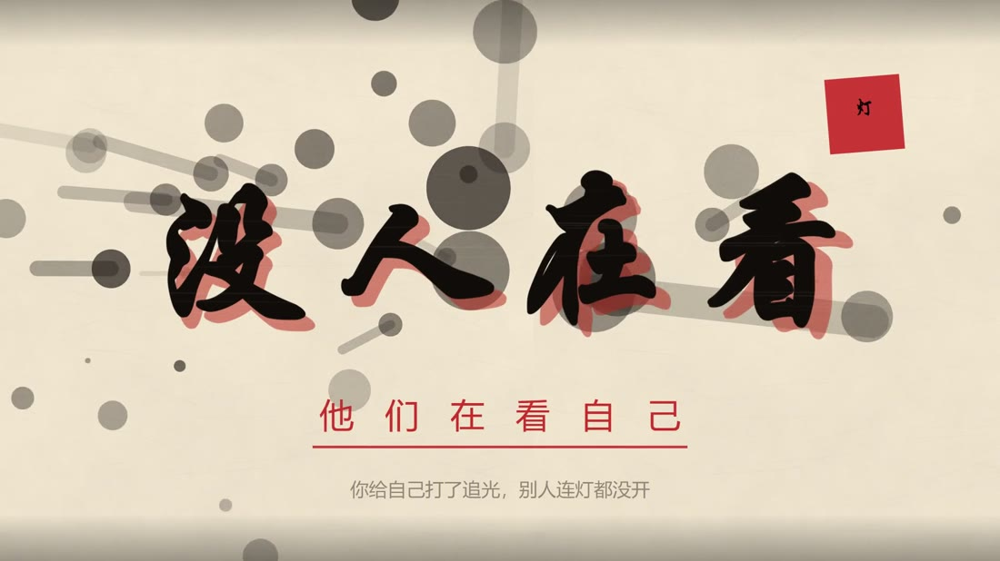
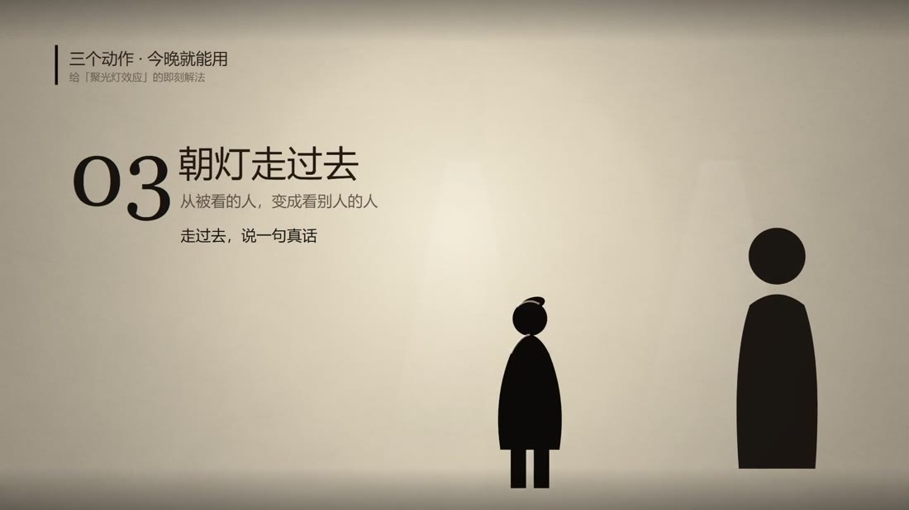
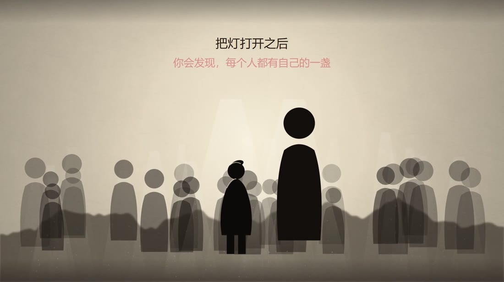

MOTION · 2026
你走进一间教室，觉得全场都在看你。前 17 秒把观众按进「被围观」的焦虑，drop 处全屏反白、墨点炸开——「没人在看。他们都在看自己。」最后给三个当晚就能用的动作。全片用眼睛 → 镜子 → 灯三个意象，把一个心理学概念讲成一次情绪反转。
52.2s / 1080p30 / H.264 + AAC 立体声。全片无口播，建议全屏、开声音观看 —— 卡点是这片子的骨架。视频为本地文件，不需要联网。
没有拍摄、没有素材库、没有生成模型。纸纹、山峦、毛笔笔锋、墨点爆散、镜像阵列 —— 全是 Canvas 2D 一帧一帧画出来的，声音是 numpy 算出来的。
01纯代码视觉：水墨也能被算出来
程序化纸纹、fbm 噪声山峦、带飞白的毛笔笔锋、墨点爆散、镜像阵列，全部是代码。0 个素材文件 —— 没有贴图、没有笔刷、没有序列帧。好处是改一处参数整片重渲，不存在「找不到合适的素材」。
02数据驱动卡点：画面和声音共用同一份时间表
先用 Python 频谱通量给音乐测速，测出四分音符 1.0846 s、相位 0.352 s（实测强起音 0.35 / 1.435 / 2.520 / 3.615 … 全部落在网格上）。网格常量写进 js/times.js，画面与音频共用这一份；所有切点取 0.352 + k × 1.0846，实测切帧与网格误差 ≤ 1 帧（0.03 s）。
03卡点是怎么修对的：从「慢半拍」到「压在 drop 上」
上一版为了换时间把音乐放慢到 0.9 倍，整条听感偏慢；更关键的是我用的节拍相位 0.085 与音乐真实相位 0.352 差了约 0.27 秒 —— 所有切点都比鼓点早一点点，看起来就是「没卡上」。这一版音乐恢复原速、不再做任何拉伸，重测真实网格后重排，白屏正压在原曲 drop 的 17.44 s。
04声音设计：只在该让路的地方让路
原曲 0–52.2 s 连续播放，无变速、无硬切、高潮不压；只在脑内卡 / 数据处 −2～−3 dB、动作卡处 −1 dB，保证字读得清又不打断音乐。拟音（开门、毛笔、印章、心跳、riser、sub、crash + 金属铃 5 处）由 numpy 合成，母带 −14 LUFS / −1.5 dBTP。
从「所有人都在看你」到「每个人都有自己的一盏灯」，反转发生在第 17.44 秒。





1 拍 = 1.0846 s。下表的时间点全部满足 0.352 + k × 1.0846。
| 时间 | 内容 | 拍 |
|---|---|---|
| 0–1.44 | 门缝光 → 人站进去 | — |
| 1.44–3.61 | 「看」砸屏 → 所有人都在看你 → 睁眼 | 2 拍 |
| 3.61–7.94 | 四张脑内卡（衣服 / 头发 / 她笑了 / 他们在说我） | 每张 1 拍 |
| 7.94–11.20 | 片名 + 英文 + 两行定义 | 3 拍 |
| 11.20–13.37 | T 恤实验场景 | 2 拍 |
| 13.37–15.54 | 50% → 23% → 差 2.2 倍 | 2 拍 |
| 15.54–17.44 | 瞳孔特写 → 群眼逼近 → 黑场蓄力 | 1.75 拍 |
| 17.44 | 原曲 drop = 白屏 + 墨爆 | 落在 drop 上 |
| 17.44–19.88 | 「没人在看 / 他们都在看自己」 | 2.25 拍 |
| 19.88–22.04 | 几十面镜子 | 2 拍 |
| 22.04–28.55 | 01 向外看 / 02 验证 / 03 走过去 | 每个 2 拍 |
| 31.81–35.06 | 把灯打开，人人一盏 | 3 拍 |
| 38.31–42.65 | 「你不是舞台 / 你是那束光」 | 4 拍 |
| 42.65–52.20 | 落版字样 + 朱砂印章 → 结尾卡 + 渐黑 | 9 拍 |
这条片子和「做内容」有什么关系
心理学概念是最容易讲成名词解释的题材 —— 讲完观众记住了一个词，什么都没发生。这里的做法是先定体验目标：不是让人「知道」聚光灯效应，是让人「被看一次」，再在第 17 秒把那个感觉翻掉。为此前 17 秒全部服务于制造压迫感，数据（T 恤实验 50% → 23%）只占 2 拍。
这和我做内容的动作是同一套：先定要让人产生什么感觉，再决定信息放在哪、留多久。区别只是这次的「素材」是代码，「成片」是 52 秒。
这条片子是 vibecoding 完成的：代码由 AI 模型生成，但概念、脚本、分镜、视觉系统、节拍分析与声音设计——这些是人的判断。模型负责把它写出来，我负责决定写成什么。
其中「卡点修对」这一步最能说明分工：模型能写出卡点代码，但判断「为什么看着慢半拍」、决定要回去重测真实相位，是看完片子之后人的判断。这类返工决策没法外包 —— 它要求你先承认上一版是错的。
这也是我认为 AI 内容生产的正确姿势：不是「让 AI 做一条片子」，而是「我说清楚要什么，AI 帮我把它造出来，我验收」。验收标准在我这边。
render.mjs 逐帧出图）· Python（频谱通量测速、numpy 拟音合成）· FFmpeg（编码 / 封装）。